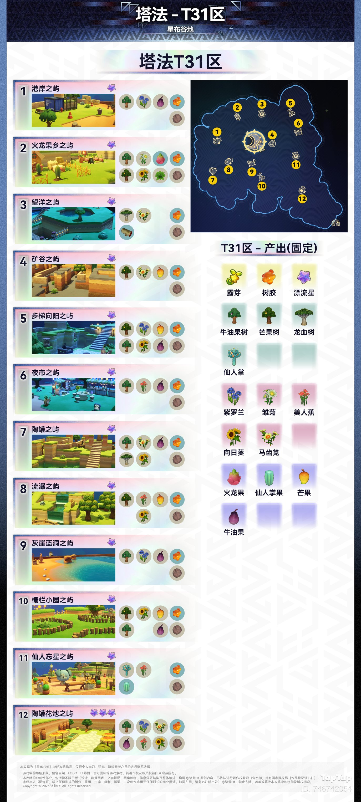
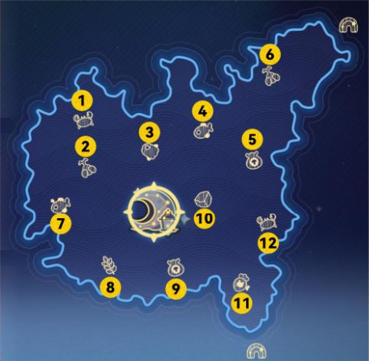
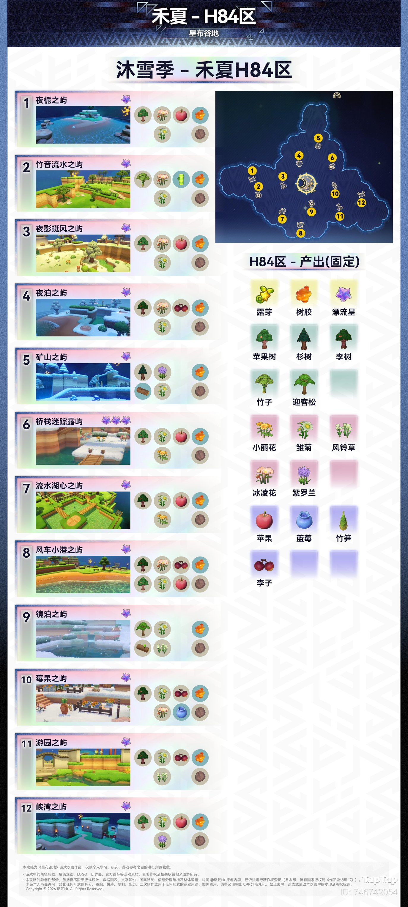

首页 / 星海旅行
星海旅行
星海旅行是可以前往各个星区小岛游玩的玩法。每个星区包含 12 座小岛，各岛主题与固定产出固定。
点击各区域名称，可进入该区域的详细岛屿内容。
塔法T31区

禾夏H83区

沐雪季 - 禾夏H84区

本页面内容由玩家自行整理编辑的资料站，游戏内容版本均为测试版本
本页为《星布谷地》玩家图鉴资料页，内容整理自玩家资料站与游戏内数据，仅供参考；游戏版本更新后数据可能滞后。
站点由 GitHub Pages 静态托管 · 与游戏官方及 B 站 WIKI 无隶属关系 · 游戏素材版权归原权方所有。